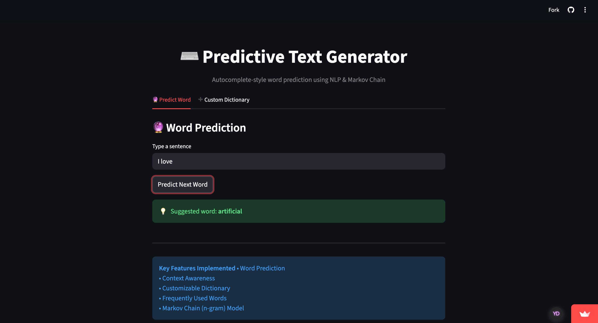

👩💻 About Me
Building intelligent systems that turn data into actionable insights
Data Analyst skilled in Python, SQL, and machine learning, with a strong foundation in statistical analysis and data-driven problem solving. I specialize in transforming complex datasets into actionable insights through exploratory data analysis, predictive modeling, and interactive data applications.
With hands-on experience in real-world data analysis during my internship and research exposure in IoT behavioral analytics (ComSIA 2026), I bring a balance of analytical rigor and practical implementation. I am particularly interested in building intelligent systems that combine data, behavior, and technology to solve meaningful problems.
⚡ Highlights
- 🚀 Turning raw data into actionable insights using Python, SQL, and EDA
- 📊 Building predictive models that solve real-world problems with measurable impact
- 🤖 Combining machine learning and NLP to create intelligent, user-facing systems
- 🌐 Developing interactive data applications with Streamlit and modern web tools
- 📡 Research-driven thinker with IoT + behavioral analytics innovation experience
🎓 Education
Master of Computer Applications (MCA)
Christ University, Delhi NCR Expected May 2027
Awarded the Academic Excellence Award for achieving the highest GPA in the MCA batch of 2025-2026
- CGPA: 3.93 / 4.00 (T1), 3.95 / 4.00 (T2)
Bachelor of Computer Applications (BCA)
Indira Gandhi National Open University 2025
- Percentage: 74.07%
🛠️ Skills
Programming
Python (Pandas, NumPy, ML) SQL (Joins, Aggregations) JavaData Analysis
EDA Data Cleaning StatisticsMachine Learning
Scikit-learn Feature Engineering NLPDatabases
MySQL PostgreSQL MongoDBTools
Jupyter Git Streamlit Postman💼 Experience
Data Analysis Intern
Cognifyz Technologies
Jan 2026 – Feb 2026- Performed data cleaning and preprocessing pipelines
- Conducted EDA to identify trends and patterns
- Used Python (Pandas, NumPy) and SQL for analysis
- Generated insights and visual reports
- Improved workflow reproducibility
🔬 Research
IoT Behavioral Analytics
Paper Accepted at ComSIA 2026
- Paper accepted at ComSIA 2026
- FocusLink: Reducing digital distraction
- Analyzed smartphone usage behavior
- Applied statistical modeling techniques
⚡ Certificates
Selected WorksMachine Learning With Python

Endorsed by Anaconda, I hold a Professional Certificate in Machine Learning with Python, demonstrating proficiency in data preprocessing, text analytics, and model deployment. My training encompasses the practical application of Decision Trees and predictive modeling to solve intricate data challenges. I am committed to utilizing these industry-standard frameworks to deliver robust and innovative technical solutions.
AI Tools Workshop - Be10X

Certified through the Be10X AI Tools Workshop, I have developed a practical command over a suite of AI applications designed for the modern workplace. My training focused on leveraging AI for market research, effective prompt engineering, and no-code automation to optimize business operations. This credential reflects my commitment to staying at the forefront of digital transformation and utilizing AI as a strategic asset for professional excellence.
The Complete Full-stack Web Development Bootcamp

Certified in Full-Stack Web Development through Udemy, I possess a comprehensive understanding of modern web architecture as taught by industry expert Dr. Angela Yu. My training covered essential development workflows, from version control with Git and GitHub to deploying scalable applications with APIs and authentication protocols. I am adept at utilizing the MERN stack and relational databases to create seamless, end-to-end digital experiences.
⚡ Projects
Selected WorksFocusLink – IoT

FocusLink is an IoT-assisted hybrid system designed to reduce smartphone-induced digital distraction—commonly referred to as “brain rot.” Unlike traditional productivity apps that operate within the same distraction-heavy environment, FocusLink introduces a hardware-software approach that physically separates users from their smartphones while providing intelligent focus monitoring.
NLP-Predictive-Text-Generator

A Predictive Text Generator that suggests the next word based on user input, similar to autocomplete features in messaging applications. This project uses Natural Language Processing (NLP) techniques and a bigram-based Markov Chain (n-gram model) to generate context-aware word predictions.
ZYAGRA - Farmer-to-Consumer

ZYAGRA is an e-commerce web application designed to connect farmers directly with consumers, promoting organic products and encouraging sustainable agriculture. It facilitates the sale and purchase of fresh farm produce, dairy items, and other organic products by streamlining the supply chain from land to consumer.